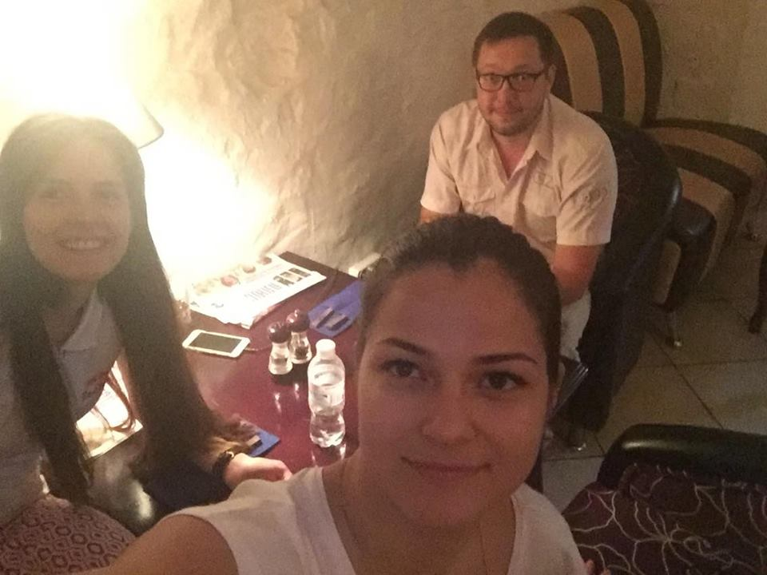

Мы нужны друг другу
тебе нужен был такой человек как я. ты не нашел его в предыдущих, хоть и очень пытался. потом ты решил отказаться от всего этого, так как увидел нереальность в своем желании. но после того, как ты увидел образ предыдущих в одной и стойкость в глазах, которые бросали вызов этому миру, ты попытался еще раз обрести то, что искал. и я думаю, не ошибся. я искала такого же человека, только совершенно не там где нужно. и получилось так, что человек сам меня нашел. и все что было так необходимо мне, он смог это дать хоть и пройдя определенные трудности. взамен получил то, что нужно было ему самому.
и все что вот сейчас происходит, это такие мелочи. но именно эти мелочи помогают всему эволюционировать (я когда-то писала тебе такое про любовь). да, любовь. многогранная, бесконечная в своем развитии, необъятная что временами пугает что ты не можешь до конца ее понять и осознать. с ее помощью ты можешь стать для человека всем, и главное тем, что ему нужно. при этом не чувствуя себя ущербным.